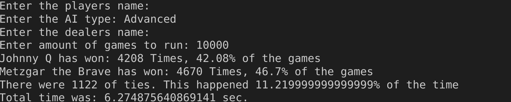
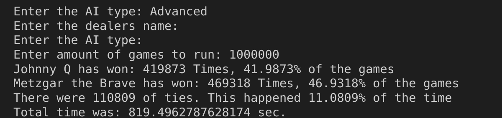
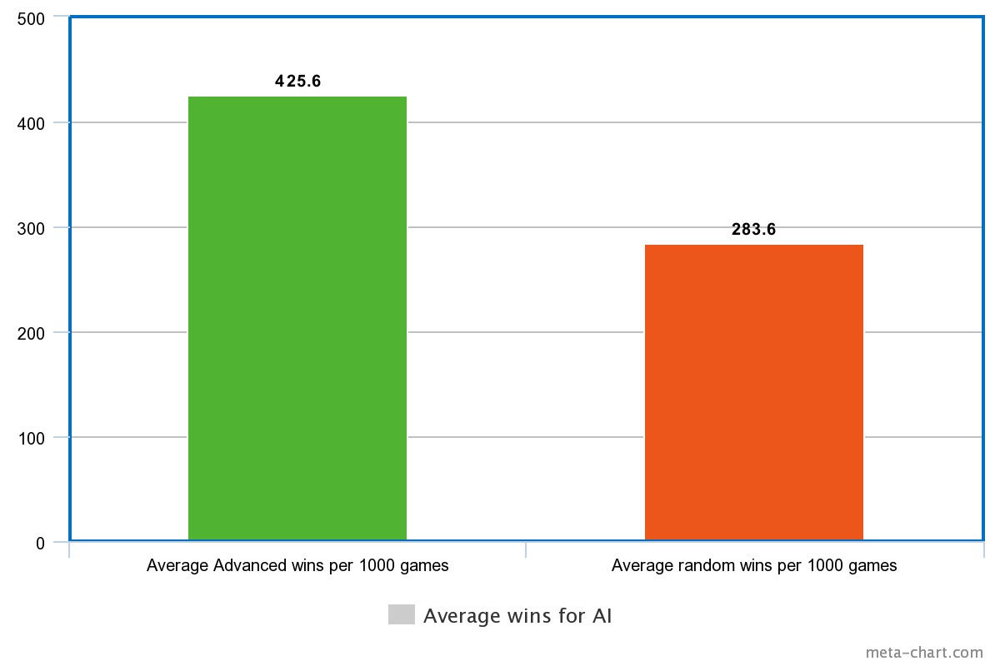

This is what standard input / output looks like. You can specify number of games,
and type of AI. You can also name them for fun.

This shows the speed difference with 1,000,000 games vs 1000 but the numbers stay relatively stable.

This shows the overall improvements compared to Advanced vs Random. It's quite a marked improvement just by card counting.

Overall this was a fun project, however it did take a lot more time than I anctipated.
And I learned, never play 21 against the dealer on your own.